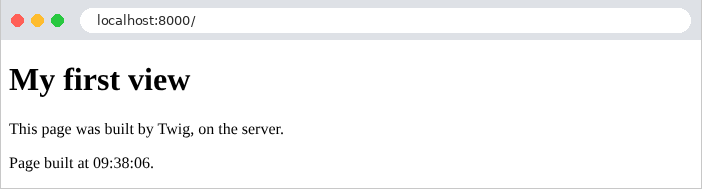
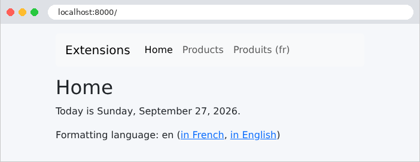
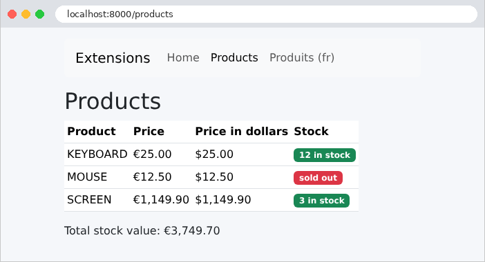
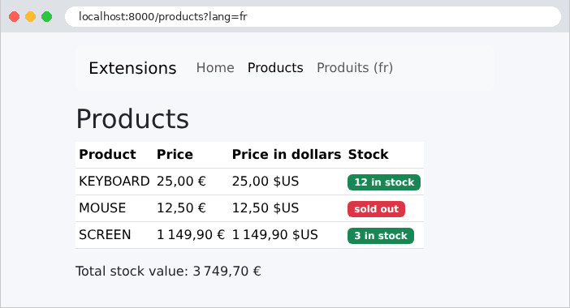
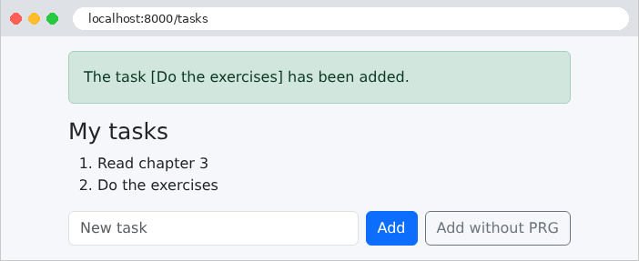
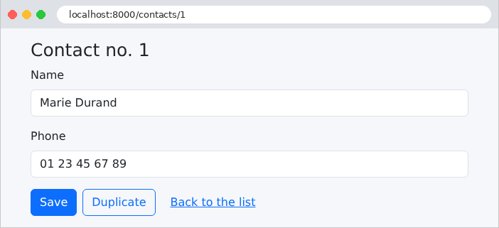

4. La vista y su modelo
Hasta ahora, las acciones generaban sus propias respuestas: texto, JSON y algunas etiquetas HTML escritas como cadena. En una aplicación MVC, este es el papel de una vista: un archivo que describe el HTML de la página, con marcadores de posición para los datos que la acción le transmite: el modelo de la vista.
[Symfony] utiliza el motor de vistas [Twig], creado por el mismo equipo. Una vista [Twig] es un archivo cuyo nombre termina en [.html.twig] (el formato de salida, seguido del motor), almacenado en la carpeta [templates] de la aplicación. Es un archivo de texto (en este caso, HTML) en el que se interpretan en el servidor tres tipos de etiquetas:
- [{{ expression }}]: el valor de una expresión, insertado en la página;
- [{% instruction %}]: una instrucción (tag); una condición ([{% if %}]); un bucle ([{% for %}]), la herencia de plantillas ([{% extends %}], [{% block %}]), la inclusión ([{% include %}])...;
- [{# comment #}]: un comentario, que no aparece en la página generada.
Todo lo demás se copia tal cual. Las expresiones no se escriben en [PHP], sino en el lenguaje de [Twig], que es más simple y más seguro: [model.title] se refiere a la propiedad [title] del objeto [model] (o a su método [getTitle()], o a la clave [title] de un arreglo: [Twig] la busca por sí mismo); los filtros transforman un valor ([name|upper] pone un nombre en mayúsculas); las funciones realizan cálculos ([path('home')] genera una URL). [Twig] se parece así a [Jinja2] ([Flask]), en el que se inspiró, o al motor de [Django]; se diferencia de [Blade] ([Laravel]) y de [Razor] ([ASP.NET Core]), que combinan HTML con código del lenguaje anfitrión. Una vista [Twig] no puede ejecutar código [PHP] arbitrario: solo puede mostrar los datos que se le proporcionan. Esto es deliberado: la lógica de la aplicación permanece en las clases. Una vista no se interpreta en cada solicitud: la primera vez que se usa, [Twig] la compila en una clase [PHP], almacenada en la carpeta [var/cache/dev/twig], que luego reutiliza mientras la vista no cambie. Veremos cómo es este archivo.
4.1. Ejemplo 13: una primera vista
4.1.1. La configuración: config/bundles.php y config/packages/twig.yaml
[Twig] se integra en [Symfony] mediante un bundle, TwigBundle, que debe añadirse a la lista de bundles de la aplicación (ejemplo 01):
y configurarse:
La única clave especifica la carpeta de las vistas: [templates], ubicada en la carpeta del proyecto. Este también es el valor predeterminado. En un proyecto estándar, estos dos archivos los crea [Symfony Flex] al instalar [Twig] ([composer require twig], véase la introducción).
4.1.2. El modelo de la vista: src/Model/PageModel.php
El modelo de la vista es una clase inmutable simple (véase el ejemplo 03): las tres informaciones que mostrará la vista. No es obligatorio definir el modelo de una vista como una clase: se podrían pasar tres variables separadas a la vista. Sin embargo, una clase documenta lo que espera la vista y permite que el editor verifique el código de la acción. Este es el enfoque que seguirá el caso de estudio, donde cada vista importante tiene su propia clase de modelo.
4.1.3. El controlador: src/Controller/ViewsController.php
- Líneas 20–23: la acción construye el modelo de la vista. La función [date], heredada de [PHP], da formato a la hora actual: [H] da formato a las horas, [i] da formato a los minutos y [s] da formato a los segundos;
- Línea 24: el método [render] de [AbstractController] ordena a [Twig] generar la página. El primer parámetro es el nombre de la vista: la ruta del archivo, relativa a la carpeta [templates]. El segundo parámetro es un arreglo asociativo, en el que cada clave se convierte en una variable de la vista; en este caso, una sola: [model]. [render] devuelve un objeto [Response], cuyo cuerpo es la página generada (de tipo [text/html]);
- líneas 31–35: otra vista, con otra variable ([name]). El tercer parámetro de [render] es una respuesta que se debe completar: en este caso, una respuesta 404 para una página de error personalizada. [new Response(status: ...)] pasa el código mediante un parámetro con nombre, mientras que los demás parámetros conservan sus valores predeterminados;
- Líneas 36–40: la misma vista que la de la acción [index], pero con un modelo diferente. Esta es la ventaja de separar las acciones de las vistas: una misma vista puede ser utilizada por varias acciones.
4.1.4. La vista: templates/views/index.html.twig
- línea 5: un comentario [Twig];
- línea 6: [{{ model.title }}] inserta el valor de la propiedad [title] de la variable [model]. El punto es el operador de acceso de [Twig], donde [PHP] escribe [$model->title].
Todo lo que inserta [{{ }}] se escapa: los caracteres [<], [>], [&], ["] y ['] se reemplazan por sus entidades HTML. Este es el papel que desempeñaba la función [htmlspecialchars] en el ejemplo 09, pero esta vez es automático: por lo tanto, una vista no puede insertar por descuido en la página el HTML proporcionado por un usuario.
4.1.5. La vista: templates/views/unknown.html.twig
Una vista no está obligada a recibir un objeto: la variable [name] es una cadena.
4.1.6. Ejecución


La hora mostrada corresponde a la zona horaria configurada en [PHP] (la directiva [date.timezone] del archivo [php.ini]), que en este caso es el Tiempo Universal Coordinado (UTC); el caso de estudio mostrará cómo definirla para la aplicación. La respuesta sin procesar muestra el trabajo realizado por [Twig]: las etiquetas [{{ }}] se han reemplazado por sus valores y el comentario se ha eliminado.
La página de error «home», seguida de un nombre que contiene HTML ([<b>martin], codificado en la URL):
La etiqueta [<b>] fue escapada, aunque ni la acción ni la vista tuvieron nada que ver (el apóstrofo también fue escapado: [']). Aquí está, por fin, la vista compilada por [Twig], tal como se encuentra en la carpeta [var/cache/dev/twig] (con un nombre generado, como [f1/f1e0ff0a8a0dc68657a0b1aa94f3ef4b.php]), reducida a lo esencial:
La vista se ha convertido en una clase llamada [PHP], cuyo método [doDisplay] genera la página pieza por pieza ([yield]). Cada [{{ model.title }}] se ha convertido en una llamada a [CoreExtension::getAttribute] (que busca la propiedad, el método o la clave [title]), pasada al método [escape] (el escape). Una vista [Twig] es, por lo tanto, simplemente una forma más segura y legible de escribir un archivo [PHP] que genera HTML.
4.2. Ejemplo 14: el lenguaje Twig
Este ejemplo combina las principales construcciones de [Twig] en una sola vista.
4.2.1. El modelo y la acción
El modelo de la vista está definido por tres clases inmutables, cada una en su propio archivo ([PHP] no exige una clase por archivo, pero el cargador de clases de [Composer] busca la clase [App\Model\Product] en el archivo [src/Model/Product.php]):
El modelo contiene valores de diversos tipos: cadenas, [null], booleanos, arreglos de objetos, arreglos vacíos y objetos que contienen otros objetos. Aquí los precios son de tipo [float], para simplificar los cálculos en la vista (el ejemplo 06 mostró por qué preferimos los centavos enteros).
La acción construye el modelo mediante parámetros con nombre (véase el ejemplo 02): cada valor va precedido del nombre del parámetro al que está destinado, lo que hace legible la llamada a pesar de la cantidad de parámetros.
4.2.2. La vista: templates/basics/index.html.twig
- Líneas 9–10: la instrucción [{% set %}] crea una variable en la vista. El precio total se calcula con el filtro [reduce], que reduce un arreglo a un único valor (como [array_reduce], ejemplo 06): su función recibe el valor acumulado y el elemento actual; [(sum, p) => sum + p.price] es una función flecha de [Twig]. El filtro [length] devuelve el número de elementos de un arreglo (o de caracteres de una cadena). Estos cálculos deberían reservarse para fines de presentación: normalmente, el cálculo corresponde a la acción;
- línea 15: un valor [null] se muestra como una cadena vacía. El filtro [default] reemplaza un valor vacío (o ausente) por un valor predeterminado;
- líneas 17–18: [{{ }}] escapa el HTML (2a); en cambio, el filtro [raw], inserta el valor tal cual, sin escaparlo (2b). [raw] está reservado para el HTML generado por la propia aplicación, nunca para datos ingresados por el usuario;
- Líneas 20–24: una condición: [{% if %}], [{% elseif %}], [{% else %}], [{% endif %}]. Cada bloque se cierra con una instrucción [{% end... %}];
- Líneas 28–34: un bucle [{% for ... in ... %}] ... [{% endfor %}]. Dentro del bucle, la variable especial [loop] describe el estado del bucle: [loop.index0] (el número de iteración, a partir de 0), [loop.index] (a partir de 1), [loop.first], [loop.last] (verdadero en la primera y en la última iteración, respectivamente), [loop.length] (el número de elementos). Las variables externas al bucle ([model.name]) siguen siendo accesibles;
- línea 30: el operador ternario [condition ? a : b] ([Twig] también acepta [condition ? a], que devuelve una cadena vacía si la condición es falsa);
- línea 38: un bucle [for] puede tener un bloque [{% else %}], que se ejecuta si la lista está vacía. Esto es más simple que un [{% if %}] que verifique la longitud de la lista;
- líneas 41–42: expresiones calculadas ([total / count]) y las variables de [set]. El filtro [number_format] da formato a un número: dos decimales, un punto como separador decimal y una coma como separador de miles. En el ejemplo 16 veremos una forma mucho mejor de dar formato a números e importes;
- línea 44: el punto atraviesa objetos ([model.address.city]), y el filtro [upper] pone una cadena en mayúsculas (manejando correctamente los caracteres acentuados);
- línea 46: la instrucción [{% verbatim %}] copia su contenido sin interpretarlo: es útil cuando una página contiene llaves destinadas a un framework de [JavaScript].
[Twig] tiene unos cincuenta filtros ([lower], [capitalize], [trim], [join], [split], [slice], [sort], [date], [json_encode], [escape]...), unas quince funciones ([range], [min], [max], [random]...) y pruebas ([is defined], [is empty], [is null], [is iterable], [is even]...); los bundles de [Symfony] añaden algunos ([path], [asset], [form_row], [is_granted]...), y la aplicación puede escribir los suyos (ejemplo 16).
4.2.3. Ejecución

La página generada:
Los comentarios y las instrucciones han desaparecido, pero dejan tras de sí sus espacios: [Twig] elimina el salto de línea que sigue a una etiqueta, pero no la sangría que la precede. Esto no tiene ningún efecto: el navegador ignora esos espacios. (Un guion dentro de una etiqueta, como [{%- ... -%}] o [{{- ... -}}], eliminaría los espacios en blanco que la rodean.) Un número [float] insertado en la página se escribe con punto decimal ([12.5]); [number_format] usa los separadores que se le pasan.
4.3. Ejemplo 15: plantillas, fragmentos y archivos estáticos
Las páginas de un sitio web suelen compartir la misma estructura: un encabezado, una barra de navegación, un pie de página y las mismas hojas de estilo. En lugar de repetir esta estructura en cada vista, se escribe una sola vez en una plantilla (layout), que las páginas extienden. Este ejemplo también usa [Bootstrap], el framework CSS más utilizado, para el diseño.
4.3.1. Archivos estáticos
Una página HTML hace referencia a otros archivos: hojas de estilo, scripts [JavaScript] e imágenes. Estos archivos, que el servidor envía tal cual, se denominan archivos estáticos. Con [Symfony], se almacenan en la carpeta [public], que el servidor web sirve tal cual (ejemplo 01): el archivo [public/css/styles.css] está disponible en la URL [/css/styles.css], sin que intervenga [Symfony] .
Algunas reglas CSS adicionales además de [Bootstrap]: un fondo gris claro, el estilo del pie de página y el estilo de un área de error que se usará en los ejemplos siguientes.
[Bootstrap] se usa en los ejemplos 15 a 28. En lugar de colocar una copia en la carpeta [public] de cada usuario, los ejemplos lo comparten: se encuentra en la carpeta [examples/common/bootstrap]. Esta carpeta no la sirve el servidor web: un controlador, compartido por todos estos ejemplos, sirve sus archivos. Este es el archivo [examples/common/BootstrapController.php]:
- línea 7: la clase está en el espacio de nombres [Common], que el archivo [examples/composer.json] asocia con la carpeta [examples/common] (véase la introducción): el cargador de clases de [Composer] la encuentra, por lo tanto, sin importar el ejemplo;
- Líneas 16–17: una ruta cuyo parámetro [{file}] acepta cualquier final de ruta, incluidas las barras (ejemplo 02): la URL [/bootstrap/css/bootstrap.min.css] se refiere al archivo [css/bootstrap.min.css] de la carpeta. La ruta se llama [bootstrap];
- Líneas 20–27: servir archivos designados por una URL exige precaución: una URL como [/bootstrap/..%2F..%2F15-layout%2F.env] (donde [/] se codifica como [%2F]) no debe dar acceso a un archivo ubicado fuera de la carpeta. La función [realpath] de [PHP] calcula la ruta absoluta de un archivo, eliminando sus componentes [.] y [..], o devuelve [false] si el archivo no existe. Verificamos que la ruta resultante comience con la ruta de la carpeta ([str_starts_with]) y que designe un archivo ([is_file]); de lo contrario, se devuelve un error 404. [DIRECTORY_SEPARATOR] es el separador de rutas del sistema: [\] en [Windows], [/] en los demás sistemas;
- líneas 29–32: un objeto [BinaryFileResponse] es una respuesta que envía el contenido de un archivo. El tipo de contenido se determina a partir de la extensión del archivo (proporcionada por [pathinfo]), de modo que una hoja de estilo se declara correctamente como [text/css]: un navegador rechazará una hoja de estilo declarada con otro tipo.
Cada ejemplo que usa [Bootstrap] declara este controlador como un servicio en su archivo [config/services.yaml]:
- línea 11: el servicio [Common\BootstrapController], sin configuración específica ([~] es el valor de [null] en [YAML]): recibe la configuración de [_defaults], y [autoconfigure] lo convierte en un controlador, cuya ruta se une a las de la aplicación (ejemplo 02).
4.3.2. La plantilla: templates/layout.html.twig
- línea 6: la etiqueta [viewport] indica a los navegadores móviles que muestren la página con el ancho de la pantalla, que es lo que espera [Bootstrap];
- línea 8: la directiva [{% block %}] marca una ranura con nombre, que las páginas que extienden la plantilla pueden llenar definiendo un bloque con el mismo nombre. El contenido escrito entre [{% block title %}] y [{% endblock %}] es el contenido predeterminado del marcador de posición, usado por una página que no define este bloque. [site_name] es una variable global, presente en todas las vistas (véase [config/packages/twig.yaml], más abajo);
- líneas 10–11: la función [path] genera la URL de una ruta con nombre (ejemplo 04), usando los valores de sus parámetros, que se proporcionan en un arreglo asociativo de [Twig] ([{file: '...'}], el equivalente de [['file' => '...']] en [PHP]). La función [asset] genera la URL a partir de un archivo de la carpeta [public]. Escribir manualmente las URL de los archivos ([/css/styles.css]) también funcionaría, pero [path] y [asset] seguirán funcionando si la aplicación se instala bajo un prefijo de URL;
- línea 16: [{% include %}] inserta el contenido de otra vista, en este caso la barra de navegación. La vista incluida tiene acceso a las variables de la vista que la incluye;
- línea 19: el espacio que cada página llena con su propio contenido;
- línea 23: la variable [app] está presente en todas las vistas: [Symfony] almacena en ella la solicitud actual ([app.request]), la sesión ([app.session]), el usuario autenticado ([app.user], véase la sección sobre seguridad), el nombre de la ruta ([app.current_route])... [app.request.pathInfo] es la ruta de la URL solicitada. El filtro [date] da formato a una fecha; la cadena ['now'] designa la hora actual.
La clase [container] de [Bootstrap] centra el contenido y limita su ancho; [py-3] agrega un margen interno vertical (padding): [Bootstrap] ofrece cientos de clases de este tipo, que se combinan en el atributo [class]. La variable global [site_name] se declara en la configuración de [Twig]:
Las variables bajo la clave [globals] se agregan a todas las vistas sin necesidad de que las acciones las proporcionen. Una variable global también puede ser un servicio (['@App\Service\...']), cuyos métodos serán llamados por las vistas.
4.3.3. La barra de navegación: templates/fragments/navbar.html.twig
Un fragmento: una pieza de página que no tiene sentido por sí sola. Las clases [navbar], [navbar-brand] y [nav-link] son las de la barra de navegación de [Bootstrap]. Los enlaces los genera [path], a partir de los nombres de las rutas.
4.3.4. Una macro: templates/macros.html.twig
- Línea 4: una macro es una sección de página que tiene parámetros; es la función de [Twig]. Se declara con [{% macro name(parameters) %}] ... [{% endmacro %}]; un parámetro puede tener un valor predeterminado ([role = '']). Un archivo puede contener varias macros. La tarjeta ([card]) es un componente de [Bootstrap].
Una macro solo puede acceder a sus propios parámetros (y a las variables globales); no puede acceder a las variables de la vista que la llama. Esto es lo que la hace reutilizable. (La biblioteca [Symfony UX Twig Component] ofrece componentes con más funciones —[PHP] clases asociadas a una vista— que se usan como etiquetas HTML: [<twig:Card name="..." />]; no los necesitaremos.)
4.3.5. Las páginas
- línea 2: la página extiende la plantilla: [Twig] genera la página de la plantilla, reemplazando sus bloques por los que define la página. En una vista que extiende una plantilla, todo el contenido debe estar dentro de bloques: el texto escrito fuera de ellos no aparece en la página generada;
- línea 4: [{% import %}] importa macros de un archivo con el nombre que usted elija ([m]);
- líneas 6–12: el bloque [content], que llena la ranura del mismo nombre. La página no define el bloque [title]: la ranura conserva su contenido predeterminado, «Home»;
- línea 11: la llamada a la macro [card], como función: [m.card(...)], dentro de [{{ }}], ya que produce texto que debe insertarse. Su resultado no se escapa por segunda vez: [Twig] sabe que ya es seguro desde el punto de vista del HTML (sus parámetros, en cambio, se escaparon dentro de la macro).
- línea 4: el bloque [title], en una sola línea;
- líneas 8–15: una tarjeta por cada miembro del equipo, en una cuadrícula de [Bootstrap] ([row], [col-md-4]: tres columnas en una pantalla mediana o grande, una columna en una pantalla estrecha);
- línea 12: los parámetros de la macro son expresiones arbitrarias.
El controlador no contiene ninguna novedad:
Por último, la tercera página no usa la plantilla:
4.3.6. Ejecución


La página del equipo, tal como la recibe el navegador:
El navegador recibió una página completa: la plantilla, el fragmento, la página y las macros se ensamblaron en el servidor. Las URL de las hojas de estilo fueron generadas por [path] y [asset]: son URL relativas al sitio. Puede verificar que las hojas de estilo se sirven correctamente (la opción [-I] de [curl] muestra solo los encabezados de la respuesta):
El primer archivo fue enviado por nuestro controlador ([BinaryFileResponse] agrega la fecha de modificación del archivo y permite almacenarlo en caché: [Cache-Control: public]); el segundo fue enviado directamente por el servidor de desarrollo, sin pasar por [Symfony]. Por último, un intento de salir de la carpeta:
(Las opciones [-s -o /dev/null -w "%{http_code}\n"] muestran solo el código de la respuesta; en [Windows], escriba [-o NUL]).
4.4. Ejemplo 16: extensiones de Twig
Una vista suele necesitar dar formato a valores: un importe con su moneda, una fecha escrita completa o un texto en mayúsculas. Este código no pertenece a la acción (que no se ocupa de la presentación), y [Twig] no permite escribirlo en la vista (que no puede ejecutar [PHP]; véase la introducción de este capítulo). Se escribe en [PHP], en una extensión de [Twig]: una clase que agrega sus propios filtros, funciones o pruebas al lenguaje de las vistas. Las bibliotecas proporcionan extensiones ya hechas, como [twig/intl-extra], instalada con los ejemplos, que da formato a fechas e importes según el idioma. Por último, las macros crean fragmentos de HTML (ejemplo 15).
4.4.1. La extensión: src/Twig/FormatsExtension.php
- Línea 14: una extensión de [Twig] hereda de la clase [AbstractExtension]. Es un servicio, como toda clase de la carpeta [src]; [Symfony] la reconoce como una extensión ([autoconfigure]) y se la pasa a [Twig];
- Líneas 17–19: la extensión necesita el idioma de la solicitud actual. Recibe la pila de solicitudes ([RequestStack]), un servicio de [Symfony] que conoce la solicitud actual (hay una pila porque una solicitud puede desencadenar otra internamente);
- líneas 22–28: el método [getFilters] devuelve los filtros de la extensión: para cada uno, su nombre en las vistas y la función que lo implementa. [$this->money(...)] (con los puntos suspensivos) no llama al método: lo convierte en un valor, una función que se puede llamar más tarde (un first-class callable). Una extensión también puede proporcionar funciones ([getFunctions]) y pruebas ([getTests]);
- líneas 33–37: formato de un importe recibido en centavos (véase el ejemplo 06). Esto depende del idioma: en francés, [1 149,90 €] (espacio para separar los miles, coma decimal, símbolo después del importe); en inglés, [€1,149.90]. La clase [NumberFormatter], parte de la extensión [intl] de [PHP], admite las convenciones de todos los países (usa datos del proyecto Unicode CLDR): se crea para un idioma y un estilo (aquí, [CURRENCY], para importes), y [formatCurrency] da formato a un importe, con la moneda designada por su código internacional ([EUR], [USD]). El primer parámetro del filtro es el valor filtrado; los parámetros siguientes son sus propiedades en la vista ([priceCents|money('USD')]);
- líneas 40–44: formato de una fecha mediante la clase [IntlDateFormatter] de la extensión [intl]: el estilo [FULL] escribe la fecha completa, incluido el día de la semana ([Sunday, September 27, 2026]); el estilo [NONE], para la hora, no la incluye. El tipo [DateTimeInterface] acepta todas las fechas de [PHP];
- líneas 46–49: el idioma ([fr], [en]) de la solicitud actual, o inglés si no hay solicitud (en un comando de consola, por ejemplo). Veremos quién lo establece.
4.4.2. El idioma de cada solicitud: src/EventListener/SetLanguage.php
Cada solicitud tiene un idioma (locale), que por defecto es el idioma [default_locale] indicado en la configuración ([en] si no se ha configurado nada). Aquí, el parámetro [?lang=fr] de la URL selecciona el francés; el inglés es el idioma predeterminado. Un listener del evento [kernel.request] (ejemplo 12) lo establece antes de cada acción mediante el método [setLocale] de la solicitud. El parámetro [priority] del atributo fija el orden de los listeners de un mismo evento: los de mayor prioridad se procesan primero (el valor predeterminado es 0). [Symfony] tiene por sí mismo varios listeners de [kernel.request]: el enrutamiento (prioridad 32), seguido de los que preparan los servicios que dependen del idioma (16 y 15). El nuestro debe ejecutarse entre ambos: 20. El comando [php bin/console debug:event-dispatcher kernel.request] muestra todos los listeners del evento, en orden. El idioma establecido de este modo solo se aplica a la solicitud actual: la siguiente volverá al idioma predeterminado. El capítulo sobre internacionalización usará este mismo idioma para traducir los textos.
4.4.3. La configuración: config/services.yaml
- Línea 15: los filtros de la biblioteca [twig/intl-extra] los proporciona la extensión [IntlExtension]. Su clase no está en la carpeta [src]: se declara como un servicio, y [Symfony] la reconoce como una extensión de [Twig] ([autoconfigure]). (En un proyecto estándar, el paquete [twig/extra-bundle], instalado por [Symfony Flex], se encarga de esto por sí mismo.)
4.4.4. El controlador: src/Controller/PagesController.php
Las acciones pasan valores sin procesar a las vistas: una fecha ([new DateTimeImmutable('today')], la fecha de hoy a medianoche) e importes en centavos. Las vistas se encargan del formato. La clase [Product] combina un nombre, un precio (en centavos; véase el ejemplo 06) y un nivel de existencias.
4.4.5. Las vistas
- líneas 4–6: una macro que crea un enlace para la barra de navegación. Al enlace de la página actual se le asigna la clase [active] de [Bootstrap], que lo resalta. Una macro accede a la variable global [app] (ejemplo 15): [app.request.pathInfo] es la ruta de la solicitud actual; [starts with] es un operador de [Twig], que verifica el comienzo de una cadena. El operador ternario sin cláusula «else» ([condition ? ' active']) devuelve una cadena vacía si la condición es falsa (ejemplo 14);
- Líneas 9–11: una insignia de [Bootstrap], verde ([text-bg-success]) o roja ([text-bg-danger]) según el inventario. El operador [~] de [Twig] concatena dos cadenas (el [.] de [PHP]).
- línea 1: un fragmento incluido (ejemplo 15) no hereda las importaciones de la vista que lo incluye: importa por sí mismo las macros que necesita;
- línea 6: lo mismo que con la macro, escrito directamente en la vista, mediante el operador ternario. [app.current_route] es el nombre de la ruta de la solicitud actual. La macro evita repetir la condición en cada enlace;
- línea 8: la llamada a la macro;
- línea 11: un parámetro de [path] que no es un parámetro de ruta se agrega a la URL como parámetro: [/products?lang=fr].
- línea 7: nuestro filtro [long_date];
- línea 9: [app.request.locale], el idioma de la solicitud, establecido por el listener [SetLanguage].
- línea 13: un filtro de [Twig];
- Líneas 14–15: nuestro filtro [money], primero con su moneda predeterminada, luego con un parámetro;
- línea 17: la llamada a la macro [badge];
- línea 24: el filtro [format_currency] de la extensión Intl: un importe (aquí en euros: el inventario total, calculado por [reduce], dividido por 100), una moneda y el idioma de la solicitud, pasado mediante un parámetro con nombre de [Twig] ([locale: ...]). Esta extensión también proporciona [format_date], [format_datetime], [format_number], [country_name], [language_name]... Nuestro filtro [money] es, por lo tanto, redundante: lo escribimos para demostrar cómo se escribe una extensión.
La plantilla [layout.html.twig] es una versión simplificada de la del ejemplo 15; su atributo [lang] recibe el idioma de la solicitud ([<html lang="{{ app.request.locale }}">]).
4.4.6. Ejecución


La misma página, con el parámetro [?lang=fr]. Solo cambia el formato de los números: el texto en sí está escrito directamente en las vistas. El capítulo sobre internacionalización también traducirá el texto.

Un extracto del HTML produce:
4.5. Ejemplo 17: un formulario GET
Un formulario HTML envía sus campos al servidor de una de dos maneras, según su atributo [method]:
- [method="get"]: los campos se agregan a la URL como parámetros ([/search?keyword=le&genre=novel]). Este es el método que usa un formulario que realiza una consulta: una búsqueda o un filtro. La URL que contiene los resultados se puede guardar como marcador, compartir o recargar sin riesgo;
- [method="post"]: los campos se incluyen en el cuerpo de la solicitud (véase el ejemplo 11). Este es el método que usa un formulario que modifica datos: un registro, una adición o una eliminación.
Este primer formulario es una búsqueda de libros. Está escrito a mano en HTML dentro de la vista; los ejemplos siguientes usarán el componente Form de [Symfony] para los formularios.
4.5.1. El modelo: src/Model/Book.php y SearchModel.php
- Líneas 14–19: el modelo de la vista contiene los datos ingresados por el usuario, que el formulario muestra, la lista de géneros sugeridos y los resultados.
4.5.2. El controlador: src/Controller/BooksController.php
- Línea 16: una constante de clase privada llamada [self::GENRES] ([self] se refiere a la clase actual). Una constante no puede contener objetos: por eso los libros los proporciona un método estático (líneas 19–28). En una aplicación real, provendrían de una base de datos;
- líneas 32–33: dos rutas para la misma acción: el atributo [#[Route]] se puede repetir. En la primera visita ([/]), no hay parámetros y se muestran todos los libros;
- líneas 37–38: los campos del formulario se leen como parámetros de la URL (ejemplo 07). El método [getString] devuelve el parámetro como cadena, vacía si está ausente;
- líneas 40–43: filtrado. La función [array_filter] conserva los elementos de un arreglo para los cuales la función dada devuelve [true]: se selecciona un libro si la palabra clave está vacía o aparece en su título o autor (en minúsculas en ambos lados; [mb_strtolower] maneja correctamente los caracteres acentuados), y si el género está vacío o coincide con el género del libro. [array_filter] conserva las claves de los elementos seleccionados (0, 2...): [array_values] las renumera a partir de 0;
- líneas 44–46: el modelo de la vista.
4.5.3. La vista: templates/books/search.html.twig
- Línea 6: la etiqueta [<form>]. El atributo [action] es la URL a la que se envía el formulario; [method="get"] coloca los campos en la URL. Las clases de [Bootstrap] disponen los campos en una sola línea;
- Línea 8: una etiqueta de campo (label). Su atributo [for] especifica el identificador ([id]) del campo que describe: al hacer clic en la etiqueta, el cursor se coloca en el campo, y los lectores de pantalla leen la etiqueta junto con el campo;
- línea 10: un campo de entrada. Su atributo [name] es el nombre del parámetro enviado al servidor: este es el vínculo entre el formulario y la acción ([$request->query->getString('keyword')]). El atributo [value] es el valor mostrado: la entrada anterior, vuelta a mostrar (y escapada por [{{ }}], lo cual es esencial en un atributo: una entrada que contenga comillas ["] cerraría el atributo de otro modo);
- líneas 14–20: una lista desplegable. Cada [<option>] tiene un valor ([value]), que se envía al servidor, y un texto, que se muestra. La primera opción, con un valor vacío, significa «todos los géneros»;
- línea 18: a la opción seleccionada en la solicitud anterior se le asigna el atributo [selected]. Es un atributo booleano: basta con su presencia; no tiene valor. El operador ternario sin la parte «else» lo escribe si la condición es verdadera y no escribe nada en caso contrario. [==] es la igualdad de [Twig];
- línea 23: el botón de envío;
- línea 26: el número de resultados.
4.5.4. Ejecución

Ingresemos [le] y seleccionemos el tipo [novel]:

La URL de la página de resultados contiene los campos del formulario: [/search?keyword=le&genre=novel]. La respuesta del formulario:
«Madame Bovary» no está seleccionada: «le» no aparece ni en el título ni en el nombre del autor.
4.6. Ejemplo 18: campos de formulario
Este ejemplo presenta todos los tipos de campos de un formulario HTML, esta vez enviado mediante POST. Muestra cómo volver a mostrar cada tipo de campo con su valor actual, cómo envía el navegador los valores de cada uno y cómo verifica el servidor que un valor recibido es realmente una de las opciones disponibles. Escribir todo esto a mano, como en el ejemplo 17, sería laborioso y repetitivo. [Symfony] delega esta tarea en su componente Form: un formulario se describe mediante una clase, su tipo; [Symfony] genera el HTML, lee los campos enviados, los convierte, los valida y vuelve a mostrar el formulario con los datos ingresados por el usuario y los errores, si los hay. Es el equivalente de [WTForms] en [Python].
4.6.1. El servicio de listas: src/Service/ListsService.php
Las listas desplegables del formulario (títulos de cortesía, países, pasatiempos, idiomas) las proporciona un servicio, siguiendo el modelo del ejemplo 06: en una aplicación real, provendrían de una base de datos. Cada lista es un arreglo asociativo: la clave es el texto mostrado y el valor es lo que se envía al servidor (este es el orden que espera el componente Form).
4.6.2. La configuración
- líneas 5–7: el idioma y el traductor (ejemplo 09): los mensajes de error del componente Form, al igual que los del validador, estarán en inglés;
- línea 9: la sesión del usuario, de la que hablaremos más en el ejemplo 20: el componente Form almacena allí el token anti-CSRF (véase más adelante);
- línea 11: la protección anti-CSRF de los formularios.
- Línea 5: el tema de los formularios. [Symfony] muestra cada campo mediante bloques de [Twig]; un tema proporciona la versión adecuada para un framework CSS. El tema [bootstrap_5_layout.html.twig], incluido con [Symfony], usa las clases de [Bootstrap] 5 ([form-control], [form-label], [is-invalid]...). La aplicación puede escribir sus propios temas o sobrescribir ciertos bloques de un tema existente.
4.6.3. El tipo de formulario: src/Form/FieldsType.php
- línea 17: un tipo de formulario hereda de la clase [AbstractType]. Es un servicio (ubicado en la carpeta [src]): puede recibir otros servicios, en este caso el servicio de listas (línea 20);
- línea 25: el método [buildForm] describe los campos agregándolos ([add]) a un constructor de formularios: para cada campo, su nombre, tipo y opciones. El nombre del campo es también el nombre del dato que muestra; su etiqueta, por defecto, es su nombre con formato de texto ([name] se convierte en «Name»);
- Líneas 30–35: un campo [ChoiceType] es una lista desplegable, definida por la opción [choices]. Con la opción [expanded], se convierte en un grupo de botones de opción (un campo de selección única). La opción [label_attr] asigna una clase a la etiqueta del grupo: [radio-inline] especifica botones en línea en el tema. La opción [constraints] define las restricciones de validación del campo (ejemplo 08): el título de cortesía es obligatorio;
- línea 37: un campo [TextType] es un campo de entrada. La opción [required] es [true] por defecto: [Symfony] establece entonces el atributo HTML [required], que el navegador verifica (ejemplo 19). No envía ninguna información al servidor: es una restricción ([NotBlank]) la que hace que un campo sea obligatorio para el servidor;
- línea 39: una contraseña ([PasswordType]), que nunca se devuelve a la página: su campo siempre está vacío al mostrarse;
- líneas 41–46: una fecha ([DateType]), mostrada mediante un único campo [<input type="date">] (opción [widget]). Un campo de este tipo intercambia su valor con el servidor en el formato [yyyy-mm-dd], sin importar el formato en que lo muestre el navegador; la opción [input] especifica que el dato es una cadena (en lugar de un objeto [DateTime], que es el valor predeterminado);
- líneas 48–54: una lista con elecciones múltiples ([multiple]) expandida: casillas de verificación;
- línea 56: una lista de elección simple no expandida: una lista desplegable;
- líneas 58–64: una lista de elección múltiple no expandida: una lista de selección múltiple, mostrada en cuatro líneas (el atributo HTML [size], especificado mediante la opción [attr]);
- línea 65: un cuadro de texto ([TextareaType]), de dos líneas;
- línea 67: un campo oculto ([HiddenType]).
[Symfony] proporciona unos treinta tipos de campos: [EmailType], [IntegerType], [MoneyType], [UrlType], [CheckboxType], [FileType], [CountryType], [RepeatedType] (ejemplo 19), [CollectionType] (una lista de subformularios)...
4.6.4. El controlador: src/Controller/FormController.php
- línea 16: una única acción para ambos métodos: GET muestra el formulario y POST lo procesa. Esta es la forma estándar de escribir una acción de formulario con [Symfony];
- línea 20: los valores iniciales del formulario: un arreglo asociativo, con un valor por campo (un arreglo para un campo de valores múltiples);
- línea 22: [createForm] crea el formulario (un objeto [Form]) a partir de su tipo y de los datos iniciales;
- línea 25: [handleRequest] examina la solicitud. Con un GET, no hace nada. Con un POST que contiene los campos del formulario, los copia en el formulario: cada campo convierte su valor (la fecha, las listas, etc.), verifica que la selección esté entre las que se ofrecieron y, a continuación, el formulario valida las restricciones y el token anti-CSRF;
- línea 27: [isSubmitted]: ¿se envió el formulario?;
- líneas 29–34: para este ejemplo, la lista de lo que el navegador envió realmente. Los campos de un formulario de [Symfony] se nombran a partir del formulario: [fields[name]], [fields[hobbies][]]. [PHP] los organiza, por lo tanto, en un arreglo llamado [fields] (ejemplo 10), que luego se recorre. [(array) $value] convierte un valor único en un arreglo de un elemento (un arreglo sigue siendo un arreglo); [implode] combina los elementos de un arreglo en una cadena, separados por el primer parámetro;
- líneas 35–42: el modelo de la vista recibe lo que recibió el servidor: el resultado de la validación ([isValid]), los errores ([getErrors(true)]: los de todos los campos) y los datos del formulario ([getData]), convertidos por cada campo. El operador [+=] agrega estas claves al arreglo [$model];
- línea 44: el formulario se pasa a la vista, que lo mostrará junto con los datos ingresados por el usuario y los errores, si los hay.
4.6.5. La vista: templates/form/form.html.twig
- línea 6: la función [form_start] escribe la etiqueta [<form>]: el método POST y la URL de la página actual, por defecto; el segundo parámetro agrega atributos HTML;
- Línea 8: la función [form_row] escribe un campo completo: su etiqueta, su campo de entrada (con su valor actual) y sus errores, usando las clases del tema. [form.title] se refiere al campo [title] del formulario. También se pueden escribir las partes por separado: [form_label], [form_widget], [form_errors];
- líneas 9–19: los demás campos, dispuestos mediante las clases de cuadrícula de [Bootstrap];
- línea 22: [form_end] escribe los campos que aún no se han escrito (en este caso, el campo oculto [token] y el campo oculto [_token], el token anti-CSRF), y luego cierra la etiqueta [</form>];
- línea 25: la comprobación [is defined]: la variable [received] solo existe después de un envío;
- líneas 30–33: los errores. Cada uno es un objeto [FormError], donde [origin] es el campo que contiene el error;
- Líneas 39–41: un bucle [for] sobre un arreglo asociativo, que recorre tanto las claves como los valores. La prueba [is iterable] distingue entre arreglos (agrupados por el filtro [join]) y valores únicos.
Todo el formulario se podría haber escrito en una sola línea: [{{ form(form) }}]. Las funciones [form_start], [form_row], y [form_end] permiten disponer los campos como se desee.
4.6.6. Ejecución

Se ven los valores predeterminados: el botón de opción «Mme», el país «France» y el idioma «French». El HTML produce lo siguiente (extractos, mostrados en varias líneas):
[Symfony] ha escrito todo: los identificadores ([fields_title_1]), las etiquetas asociadas a sus campos, los nombres terminados en [[]] para los campos múltiples (ejemplo 10), los atributos [checked] y [selected] de los valores comunes y las clases de [Bootstrap]. El último campo oculto, [fields[_token]], contiene el token anti-CSRF. Un ataque CSRF (Cross-Site Request Forgery) consiste en que un sitio malicioso engañe al navegador de su víctima para que envíe un formulario a nuestra aplicación. El navegador incluye las cookies de nuestra aplicación en la solicitud, y por lo tanto la sesión del usuario autenticado, de modo que la solicitud parece legítima. La contramedida: cada formulario de nuestra aplicación contiene un token aleatorio vinculado a la sesión del usuario, que el sitio malicioso no puede conocer. El componente Form agrega este token a todos los formularios, y [handleRequest] rechaza cualquier formulario cuyo token falte o sea incorrecto: ningún formulario puede omitirlo. (El atributo [data-controller] lo usa un script opcional de [Symfony], que refuerza la protección; aquí no tiene ningún efecto.) Completemos el formulario y enviémoslo:

La página muestra lo que recibió el servidor: un parámetro por campo, con varios valores para las casillas de verificación y la lista desplegable; la contraseña se envió, pero no se vuelve a mostrar en su campo. El campo oculto [token] se devolvió tal cual: esta es la forma de enviar de ida y vuelta información que el usuario no ve (el caso de estudio lo usa para el número de versión de un registro). Sin embargo, un campo oculto no es un campo protegido: el usuario puede modificarlo con las herramientas de desarrollo de su navegador, y el servidor debe validarlo como a cualquier otro campo. El token anti-CSRF también figura entre los campos recibidos; no forma parte de los datos del formulario.
Ahora enviemos un formulario sin token, con [curl], y con un país que no figuraba entre las opciones:
El formulario es no válido por tres razones: falta el token anti-CSRF (el error está asociado al propio formulario), no se envió ningún título de cortesía y el país [xx] no figura entre las opciones disponibles. Esta última verificación la realiza el propio campo [ChoiceType], sin que la hayamos solicitado: un usuario malicioso podría enviar cualquier cosa, no solo lo que ofrecía la página. Los mensajes están en inglés: los del componente Form los traduce [Symfony], igual que los del validador (ejemplo 09). La respuesta tiene el código de estado 422 (Unprocessable Content): [render] lo selecciona automáticamente cuando recibe un formulario enviado y no válido. Observe la diferencia con otros frameworks: [Symfony] no rechaza la solicitud antes de la acción; es el formulario el que se declara no válido, y la acción la que decide cómo proceder.
Para que el token sea aceptado, [curl] debe comportarse como un navegador: primero solicitar el formulario, conservando la cookie de sesión (opción [-c], que guarda en un archivo las cookies recibidas), y luego reenviar la cookie (opción [-b]) y el token leído de la página. La opción [--data-urlencode] codifica el propio valor del token:
(el token es el de la página recibida por el primer comando). Solo quedan los dos errores de entrada.
4.7. Ejemplo 19: validación de formularios
Un formulario de registro, en el que cada campo tiene sus propias reglas de validación. Si se produce un error, el formulario se vuelve a mostrar con los datos ingresados por el usuario y un mensaje debajo de cada campo que contiene un error. Este ejemplo usa el enfoque estándar de [Symfony]: los datos del formulario son un objeto, cuya clase contiene las restricciones (ejemplo 08); el formulario llena el objeto y luego lo valida.
Los archivos [config/packages/framework.yaml] y [config/packages/twig.yaml] son los del ejemplo 18.
4.7.1. Los datos y sus restricciones: src/Model/Registration.php
- Línea 8: una clase normal cuyas propiedades son públicas y modificables; el formulario las llenará una por una. Todas se inicializan en [null]; el objeto está vacío en la primera visualización;
- líneas 10–12: el nombre es obligatorio y no debe exceder los 20 caracteres. A cada restricción se le asigna aquí su propio mensaje, en inglés (ejemplo 09): [message] para [NotBlank], [maxMessage] para el exceso de [Length];
- líneas 15–17: la restricción [Email] verifica que una dirección sea válida y exige un nombre de dominio completo ([example.com], no [example]);
- líneas 19–21: la edad es un entero entre 18 y 120 ([notInRangeMessage]: el mensaje de [Range] cuando hay un mínimo y un máximo). El formulario habrá convertido la entrada en un entero;
- líneas 23–25: la contraseña debe tener al menos 6 caracteres.
4.7.2. El formulario: src/Form/RegistrationType.php
- línea 23: la opción [attr] agrega atributos HTML al campo de entrada: [maxlength] limita la entrada en el navegador;
- línea 24: un campo [EmailType] genera un [<input type="email">], que el navegador puede validar;
- líneas 27–31: un campo [IntegerType] genera un [<input type="number">] y convierte la entrada en un entero. Una entrada que no sea un entero no se puede convertir: se trata de un error de conversión (no de un error de validación; véase el ejemplo 08), cuyo mensaje de error proporciona la opción [invalid_message];
- Líneas 34–39: un campo [RepeatedType] está formado por dos campos (aquí, dos campos [PasswordType]), que deben contener el mismo valor: la contraseña y su confirmación. Cada uno tiene sus propias opciones ([first_options], [second_options]); si las dos entradas difieren, el error es [invalid_message]. Los datos tienen un solo valor: la contraseña;
- líneas 43–46: el método [configureOptions] define las opciones del propio formulario: [data_class] indica que sus datos son un objeto [Registration]. Cada campo lee y escribe la propiedad del mismo nombre.
[Symfony] también puede inferir el tipo de un campo a partir de las restricciones y del tipo de la propiedad: [->add('age')], que no tiene tipo, produciría un [IntegerType], con los atributos [min] y [max] inferidos de [Range]. Aquí lo hemos escrito de forma explícita para mayor claridad.
4.7.3. El controlador: src/Controller/RegistrationController.php
- línea 19: el parámetro [?html5=true] activa la validación del navegador (véase más adelante). [#[MapQueryParameter]] lo convierte en booleano (ejemplo 07);
- líneas 21–23: el objeto vacío [Registration] se pasa al formulario; [handleRequest] lo llenará con los campos enviados;
- líneas 26–28: [isValid] es verdadero si todos los campos se pudieron convertir y si el objeto [Registration] cumple sus restricciones. La página de bienvenida recibe entonces el objeto completado (el ejemplo siguiente mostrará que es mejor redirigir después de un POST exitoso);
- líneas 31–32: de lo contrario, se muestra el formulario: vacío en la primera visualización; después de un envío no válido, muestra los datos ingresados y los errores, junto con el código 422 (ejemplo 18).
Por lo tanto, el formulario no válido lo vuelve a mostrar la propia acción POST, que conserva los datos ingresados y los errores: este es el enfoque de [Symfony]. Otros frameworks, como [Laravel], responden en cambio con una redirección a la página del formulario, conservando los datos ingresados y los errores en la sesión para la siguiente solicitud.
4.7.4. Las vistas
- Línea 12: el atributo [novalidate] desactiva la validación del navegador: el formulario se envía tal cual y solo el servidor lo valida. Esto es lo que queremos observar primero. El operador ternario elige entre dos arreglos de atributos;
- línea 14: [form_widget(form)], aplicado al formulario completo, escribe todos sus campos, cada uno con su etiqueta, su entrada y sus mensajes de error: el tema [Bootstrap] resalta en rojo un campo no válido (clase [is-invalid]) y muestra su mensaje debajo (clase [invalid-feedback]). No tuvimos que escribir ningún componente para esto;
- líneas 19–25: el bloque [page_bottom], definido por la plantilla (véase más adelante). [form.vars] contiene los datos del formulario, calculados para la vista: [submitted] (¿enviado?), [valid] (¿válido?), [value], [errors]... Si el formulario se ha enviado y no es válido, aparece un mensaje general en un área cuyo estilo está definido en [public/css/styles.css] (ejemplo 15). El atributo [role="alert"] lo señala a los lectores de pantalla.
- Línea 15: un segundo bloque, [page_bottom], que está vacío por defecto: una plantilla puede tener tantos bloques como sea necesario.
[registration] es el objeto [Registration], llenado y validado: al nombre se le han quitado los espacios (véase más adelante), y la edad es un entero.
4.7.5. Ejecución
Enviemos un formulario lleno de errores: un nombre formado por espacios, una dirección sin dominio completo, una edad de 12, una contraseña demasiado corta y una confirmación diferente:

Los datos ingresados se han conservado (excepto las contraseñas), y cada error se señala debajo del campo correspondiente. El nombre formado por espacios se señala como ausente: el componente Form elimina los espacios que rodean cada entrada (opción de campo [trim], con valor true por defecto). La contraseña, en cambio, tiene un solo error, que está en la confirmación: cuando las dos entradas difieren, el campo [RepeatedType] no devuelve ningún valor y no se verifica la longitud. La URL es el identificador del formulario, y [/register] indica que la página fue mostrada por la acción en respuesta a un POST. Con [curl], proporcionando el token anti-CSRF como en el ejemplo 18, también se puede enviar algo que un navegador no enviaría: una edad no numérica:
Vemos los datos ingresados vueltos a mostrar, junto con los atributos HTML5 ([required], [min], [max]), la clase [is-invalid], el mensaje de conversión y los atributos [aria-...], que vinculan el campo con su mensaje para los lectores de pantalla.
4.7.6. Validación del navegador
Quitemos el atributo [novalidate] siguiendo el enlace «enable it» (parámetro [?html5=true]). El navegador verifica entonces los atributos [required], [type="email"], [min], [maxlength]... antes de enviar el formulario, y muestra sus propios mensajes en un globo de ayuda debajo del primer campo con un error («Please fill in this field», «The value must be greater than or equal to 18», etc.): el formulario no se envía mientras haya un error. [Symfony] genera estos atributos automáticamente: [required] para todo campo (opción [required], p. ej., 18), [type="email"] y [type="number"] según el tipo de campo; [maxlength], [min], [max] y [minlength] provienen de nuestras opciones [attr]. Deben mantenerse coherentes con las restricciones.
Esta validación es cómoda para el usuario: es inmediata, sin idas y vueltas con el servidor. Pero no sustituye la validación del lado del servidor: un usuario puede desactivarla, y un programa como [curl] la ignora por completo. La regla es absoluta: el servidor siempre valida; la validación del lado del navegador es solo una comodidad adicional.
Por fin, una entrada correcta. El nombre, ingresado con espacios a ambos lados, fue limpiado por el formulario:

4.8. Ejemplo 20: el patrón Post/Redirect/Get
Cuando una acción POST responde con una página, esa página es el resultado de un POST. Si el usuario recarga la página (presiona [F5]), el navegador reenvía la solicitud POST, tras mostrar una advertencia que pocas personas leen: el comando se envía dos veces y el mensaje se publica dos veces. El patrón Post/Redirect/Get (PRG) evita este problema: una acción POST exitosa no devuelve una página; responde con una redirección (ejemplo 04) a una página GET, que el navegador solicita de inmediato. Recargar esta página simplemente vuelve a ejecutar la acción GET.
Queda un problema: la página GET querría mostrar un mensaje (“la tarea se ha agregado”), pero es la acción POST la que conoce este mensaje, y no puede pasar una variable a una solicitud que aún no ha ocurrido. La solución: el mensaje flash, colocado en la sesión por la acción POST, se conserva hasta que se lee, se muestra y luego se descarta.
4.8.1. Configuración: config/packages/framework.yaml
- Líneas 6–8: la sesión del usuario (capítulo sobre los ámbitos): datos específicos de cada navegador, conservados de una solicitud a la siguiente. Se almacena en el servidor; el navegador solo guarda un identificador de ella, en una cookie. [handler_id: null] delega la tarea de almacenar estos datos en [PHP] mismo, que almacena cada sesión en un archivo; [save_path] selecciona la carpeta ([var/sessions/dev]) para que podamos examinarlas. [%kernel.environment%] es el entorno ([dev]);
- línea 10: los bloqueos (el componente Lock, que se describe más adelante), almacenados en la carpeta [var/lock].
4.8.2. El servicio: src/Service/TasksService.php
La lista de tareas es compartida por todos los usuarios y debe persistir de una solicitud a la siguiente. En [Java], [C#] o [Python], se mantendría en memoria dentro de un único servicio. En [PHP], esto es imposible: como vimos en los ejemplos 01 y 06, nada sobrevive a la solicitud. Por lo tanto, la lista debe almacenarse fuera de [PHP]: en una base de datos, en un archivo... o en el caché de la aplicación, que es lo que usamos aquí.
- Líneas 16–20: el servicio recibe dos servicios de [Symfony]. El primero es el caché de la aplicación (el servicio [cache.app], del componente Cache), un almacén de pares clave-valor, representado por la interfaz estandarizada [CacheItemPoolInterface] (el estándar PSR-6). De forma predeterminada, almacena sus valores en archivos dentro de la carpeta [var/cache/dev/pools]; en producción se prefiere un servidor dedicado, como [Redis] (una línea de configuración). El segundo es la fábrica de bloqueos del componente Lock;
- líneas 23–28: [getItem] recupera el elemento de caché almacenado bajo una clave; [isHit] verifica si existe y [get] devuelve su valor. Se puede almacenar cualquier valor (en este caso, un arreglo de cadenas): [Symfony] lo serializa, es decir, lo convierte en texto, mediante la función [serialize] de [PHP];
- Líneas 35–47: el servidor de desarrollo, como un servidor de producción, puede procesar varias solicitudes al mismo tiempo, en varios procesos (la variable de entorno [PHP_CLI_SERVER_WORKERS] define el número de procesos de [php -S]). Dos adiciones simultáneas podrían leer la misma lista, agregar cada una su propia tarea y luego volver a escribirla: la segunda escritura sobrescribiría la primera tarea. Un bloqueo garantiza que solo una solicitud a la vez ejecute el código que protege: [createLock('tasks')] crea un bloqueo con nombre; [acquire(true)] espera a que esté disponible y luego lo adquiere; [release()] lo libera. Aquí, el bloqueo es un archivo en la carpeta [var/lock], bloqueado por el sistema operativo (la función [flock]); como alternativa, varios servidores compartirían un bloqueo almacenado en [Redis] o en una base de datos;
- líneas 38–47: el bloque [try] … [finally] garantiza que el bloqueo se libere en todos los casos, incluso si una excepción interrumpe el código que protege;
- líneas 42–43: el elemento de caché recibe su nuevo valor ([set]) y luego se guarda ([save]). Sin una duración especificada, se conserva indefinidamente ([expiresAfter(3600)] lo conservaría durante una hora).
4.8.3. El controlador: src/Controller/TasksController.php
- líneas 29–35: la entrada se valida manualmente para mantener el ejemplo conciso ([trim] elimina los espacios circundantes). Una entrada no válida se vuelve a mostrar sin redirección: no hay nada que proteger contra un envío duplicado, ya que no se ha modificado nada;
- línea 39: el método [addFlash] de [AbstractController] coloca un mensaje flash de tipo [success] en la sesión (el tipo es arbitrario: permite distinguir entre mensajes de éxito y de error, etc.);
- línea 41: la redirección a la página GET, llamada [tasks] (ejemplo 04);
- líneas 45–50: el contraejemplo: una página como respuesta a POST. El operador [?:] devuelve su operando izquierdo si es “verdadero” (aquí, una cadena no vacía) y el operando derecho en caso contrario.
4.8.4. Las vistas
- Líneas 13–15: [app.flashes('success')] devuelve la lista de mensajes flash de tipo [success] y los elimina de la sesión: un mensaje flash se muestra una sola vez. La clase [alert alert-success] de [Bootstrap] muestra el mensaje en un recuadro verde;
- líneas 19–21: el mensaje de error, al final de la página, cuando la acción ha generado uno.
- línea 11: el operador [??] de [Twig] devuelve su operando derecho si el operando izquierdo no existe (o es igual a [null]): la variable [label] solo existe después de una entrada no válida;
- Línea 14: el atributo [formaction] de un botón envía el formulario a una dirección distinta de la especificada por su atributo [action]: así, un solo formulario puede desencadenar dos acciones distintas.
Este formulario codificado a mano carece de un token anti-CSRF: para mantener el ejemplo simple, lo agregaremos en el siguiente ejemplo.
4.8.5. ¿Dónde se almacenan los mensajes flash?
Entre la solicitud POST y la solicitud GET posterior, el mensaje debe almacenarse en alguna parte: en la sesión del usuario o en el servidor. Lo examinaremos con [curl], almacenando las cookies en un archivo (opciones [-c] y [-b], Ejemplo 18):
La respuesta a POST es una redirección (código de estado 302, encabezado [Location]), acompañada de la cookie de sesión, [PHPSESSID] (el nombre que [PHP] asigna a esta cookie), que contiene el ID de sesión: 32 caracteres aleatorios imposibles de adivinar. Esta cookie es [httponly] (el [JavaScript] de la página no puede leerla) y [samesite=lax] (el navegador no la envía con una solicitud POST originada en otro sitio). Los encabezados [Cache-Control] y [Expires] impiden el almacenamiento en caché de una respuesta que depende de una sesión. El identificador es también el nombre del archivo de sesión en el servidor: [var/sessions/dev/sess_1e1f574eccd93268b1eb829dd714a029]. Este es ese archivo, tras la solicitud POST:
Este es el formato de serialización de las sesiones en [PHP]: cada dato de sesión se escribe con la forma [name|serialized value]. [a:1:{...}] declara un arreglo de 1 elemento, [s:7:"success"] una cadena de 7 bytes... Contiene los mensajes flash ([_symfony_flashes]), ordenados por tipo, y metadatos de [Symfony] ([_sf2_meta]: las fechas de creación y de último uso de la sesión). Sigamos la redirección devolviendo la cookie:
El mensaje se muestra y [app.flashes] lo elimina de la sesión. La sesión, ahora vacía, incluso ha desaparecido: [Symfony] no almacena una sesión vacía y el archivo se ha eliminado. Una nueva solicitud GET ya no mostraría el mensaje. En cambio, la lista de tareas se almacena en un archivo de caché, cuyo nombre se calcula a partir de la clave ([var/cache/dev/pools/app/VT2eLxVxyZ/P/W/CElt3eODhIKkushDZW1A]):
La primera línea es la fecha de expiración del valor (0: nunca), la segunda es la clave y la tercera es la lista serializada. En cuanto al bloqueo, es un archivo vacío, [var/lock/sf.tasks.CFFUCEx.lock], que el sistema bloquea mientras dura una modificación.
4.8.6. Ejecución
Adición de una tarea: el navegador siguió la redirección; la URL es la de la página correspondiente a GET, que puede recargarse sin riesgo.

Una entrada no válida, mostrada de nuevo con su mensaje de error:

El contraejemplo: la página es la respuesta a POST y su URL es [/tasks/without-prg]. Si se hace clic en [F5], el navegador pregunta si se desea reenviar el formulario; si se acepta, la tarea se agrega por segunda vez.

4.9. Ejemplo 21: enlaces, botones y confirmación
Un principio del protocolo HTTP: una solicitud GET no cambia nada. Los navegadores, los motores de búsqueda y las herramientas que precargan páginas siguen libremente los enlaces sin pedir permiso al usuario. Por lo tanto, un enlace “eliminar” ([<a href="/contacts/2/delete">]) sería peligroso: un bot que rastree el sitio eliminaría todo. En una aplicación web:
- la consulta se realiza mediante un enlace ([<a href>]), que envía una solicitud GET;
- la modificación (guardar, duplicar, eliminar) se realiza mediante un botón colocado en un formulario, protegido por un token anti-CSRF.
Este ejemplo administra una lista de contactos y muestra una ventana de confirmación antes de cada eliminación.
4.9.1. Configuración: config/packages/framework.yaml
- Línea 6: un formulario HTML solo puede enviar solicitudes GET y POST. Sin embargo, el protocolo HTTP prevé otros métodos: DELETE para eliminar, y PUT y PATCH para modificar. [Symfony] sortea esta limitación: con la opción [http_method_override], un formulario POST que contiene un campo oculto [_method] con el valor [DELETE] (o [PUT], [PATCH]) se trata como una solicitud de ese método. Esto se denomina method spoofing;
- las demás líneas son las de los ejemplos 18 y 20: la sesión, la protección CSRF y los bloqueos.
4.9.2. El servicio: src/Service/ContactsService.php
Los contactos se almacenan en el caché, igual que las tareas en el Ejemplo 20. Cada contacto es un objeto inmutable [Contact] (un ID, un nombre, un número de teléfono), almacenado en un arreglo, junto con el último ID asignado. Algunos puntos sobre [PHP]:
- líneas 37–49: todas las modificaciones siguen el mismo patrón: adquirir el bloqueo, leer los datos, modificarlos, volver a escribirlos y liberar el bloqueo. Este método escribe en el arreglo una sola vez; cada modificación le pasa una función (de tipo [callable], “invocable”), que recibe los datos y los modifica. La función debe modificar el propio arreglo, no una copia: su parámetro se declara como [array &$data], donde [&] especifica un paso por referencia (sin [&], un arreglo se copia; véase el Ejemplo 06). La palabra clave [use] en una función anónima le da acceso a las variables de la función contenedora (línea 65: [$id], [$name], [$phone]);
- línea 44: las llamadas se encadenan una tras otra: [getItem] devuelve el elemento, [set] le asigna un valor y devuelve el propio elemento, [save] lo almacena;
- líneas 63–75: un contacto es inmutable: se crea uno nuevo, que reemplaza al anterior en el arreglo. Una asignación es una expresión cuyo valor es el valor asignado: [return $data['contacts'][$i] = new Contact(...)] reemplaza el contacto y lo devuelve;
- línea 80: [++] colocado antes de una variable la incrementa en 1 y devuelve el nuevo valor;
- línea 92: [array_splice] elimina un elemento del arreglo y vuelve a numerar los elementos siguientes;
- Los métodos devuelven [null] para un contacto inexistente: corresponde al controlador decidir la respuesta.
4.9.3. El formulario de la ficha: src/Form/ContactType.php
- líneas 17–18: los dos campos son obligatorios;
- líneas 20–21: dos botones de envío ([SubmitType]) forman parte del formulario. Cuando se envía el formulario, el navegador envía el nombre del botón en el que se hizo clic, y el formulario sabe cuál es. La opción [attr] les asigna sus clases de [Bootstrap].
4.9.4. El controlador: src/Controller/ContactsController.php
- línea 16: el prefijo de nombre [contacts]: por lo tanto, la ruta de la lista, cuyo nombre está vacío (línea 30), se llama [contacts], y la de la ficha es [contacts_details]...;
- líneas 24–27: una función utilitaria: un contacto inexistente detiene la acción con una respuesta 404;
- líneas 30–34: la acción GET de la lista, que no modifica nada;
- líneas 37–58: la ficha de un contacto. En GET, muestra el formulario, completado con la información del contacto; en POST, lo procesa. Por lo tanto, la misma URL y [/contacts/2] se usan tanto para consultar como para guardar;
- línea 45: los datos del formulario, un arreglo asociativo sin estructura: [['name' => $name, 'phone' => $phone] = ...] almacena cada elemento en una variable;
- líneas 46–54: [get('duplicate')] devuelve el botón [duplicate] del formulario; [isClicked()] determina si fue el que envió el formulario (la prueba [instanceof SubmitButton] confirma el tipo del objeto al editor). Según el botón, la acción duplica o guarda el contacto;
- línea 55: en ambos casos, el esquema PRG (ejemplo 20), con un mensaje flash;
- líneas 61–71: la eliminación, gestionada por una solicitud DELETE (la misma URL, pero con un método distinto). El formulario de eliminación está codificado en la vista: la acción verifica su propio token anti-CSRF mediante el método [isCsrfTokenValid] de [AbstractController]. Un token está vinculado a un identificador (aquí, [delete-contact-2]): el token de un formulario solo es válido para ese formulario. Un token ausente o no válido detiene la acción con un error 403 (Forbidden). (El atributo [#[IsCsrfTokenValid('...')]], colocado en la acción, realizaría la misma validación.)
4.9.5. Las vistas
- Línea 13: un enlace, mostrado como un botón mediante las clases de [Bootstrap] ([btn]...): la apariencia no tiene nada que ver con el método HTTP. [path('contacts_details', {id: contact.id})] coloca el ID en la ruta: [/contacts/2];
- líneas 15–22: un formulario por cada botón “Eliminar”, sin más campos que el método y el token. La clase [d-inline] lo muestra en la misma línea que el enlace. El atributo [data-confirmation] contiene el mensaje de confirmación: los atributos [data-...] no tienen asignación predefinida y están destinados al [JavaScript] de la página;
- línea 18: el campo oculto [_method], que convierte este POST en una solicitud DELETE;
- línea 20: el token anti-CSRF, generado por la función [csrf_token] de [Twig], para el identificador [delete-contact-2] (el operador [~] concatena, ejemplo 16).
- líneas 10–11: los dos botones del formulario, renderizados por [form_widget], uno al lado del otro;
- línea 12: el enlace de regreso a la lista. [form_end] generará el token anti-CSRF, que el componente Form validará por sí mismo (ejemplo 18).
4.9.6. La ventana de confirmación
El navegador puede mostrar un cuadro de diálogo de confirmación (funciones [JavaScript] y [confirm]), pero no es muy atractivo y su apariencia depende del navegador. Aquí usamos una ventana modal de [Bootstrap], mostrada con unas pocas líneas de [JavaScript]. La ventana es un fragmento incluido en la plantilla y, por lo tanto, está presente (aunque oculta) en todas las páginas:
- línea 2: la clase [d-none] de [Bootstrap] oculta el elemento;
- líneas 3–4: el fondo gris, seguido de la ventana, se renderizan mediante las clases de [Bootstrap];
- línea 11: la ubicación del mensaje;
- líneas 14–15: los dos botones, de tipo [button] (no [submit]: no envían ningún formulario), distinguidos por su atributo [data-action].
- línea 19: la ventana, incluida en todas las páginas;
- línea 21: el script, colocado al final de la página: cuando se ejecuta, los elementos que busca ya existen. Se almacena en la carpeta [public/js].
El script [public/js/app.js]:
- línea 3: el código está encerrado en una función anónima, que se ejecuta de inmediato; sus variables no interfieren con las de los demás scripts de la página;
- líneas 4–6: la ventana, la ubicación del mensaje y el formulario en espera de confirmación;
- líneas 9–17: para cada formulario que tiene un atributo [data-confirmation], se intercepta el evento [submit], que se desencadena cuando se envía el formulario. [preventDefault()] suspende el envío; el formulario se pone en espera y su mensaje ([dataset.confirmation], el valor del atributo [data-confirmation]) se muestra en la ventana, que aparece;
- líneas 20–28: un único manejador para los clics en la ventana: [event.target] es el elemento en el que se hizo clic; su atributo [data-action] especifica de qué botón se trata. “Sí” envía el formulario pendiente mediante el método [submit()], que, a diferencia de hacer clic en un botón, no desencadena el evento [submit] (de lo contrario, la ventana reaparecería); “No” oculta la ventana.
Sin [JavaScript], el formulario simplemente se envía sin confirmación: la página sigue siendo utilizable. Esto es mejora incremental: [JavaScript] aporta comodidad, pero la aplicación no depende de él.
4.9.7. Ejecución
La lista de contactos:

Al hacer clic en “Eliminar” se muestra la ventana de confirmación:

Tras la confirmación, la solicitud DELETE (simulada), la redirección y el mensaje emergente:

La ficha de un contacto, con sus dos botones de envío:

Una solicitud sin token anti-CSRF es rechazada, y un contacto inexistente devuelve un error 404:
Las páginas de error siguen siendo las detalladas del modo de depuración de [Symfony]. El capítulo sobre el ciclo de vida de la solicitud mostrará cómo reemplazarlas por páginas personalizadas.